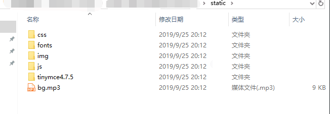
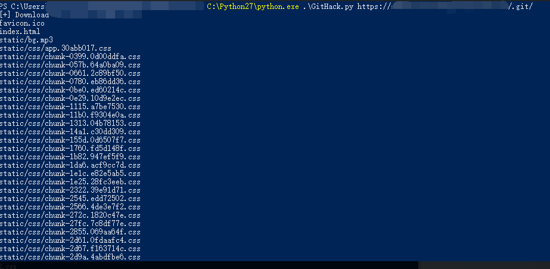
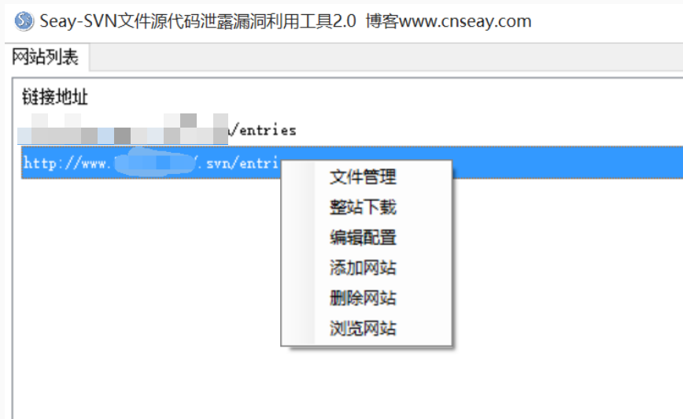
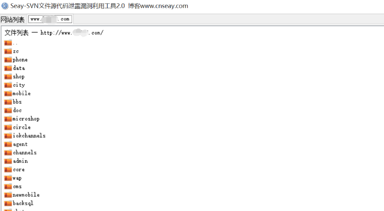

文件泄露
一、GIT
- git可以说是当今最受欢迎的版本控制/版本管理软件了, 很多基于git的云端托管仓库都提供了免费的托管服务, 甚至有不少还支持免费私有仓库, 如bitbucket和国内的gitosc(开源中国)等.
关键文件
- git在初始化项目的时候, 会在项目的根目录(可用git rev-parse --show-toplevel查看)创建一个名为
- .git的隐藏文件夹, 里面包含了本地所有commit的历史记录. 如果无意间将这个目录置于WEB的路径下让用户可以访问,那么也就泄露了几乎所有的源代码和其他其他敏感信息.
泄露内容
- 所有该项目的源代码
- 私有仓库的地址
- 私密的配置信息
- 所有commiter的邮箱帐号信息
- (可能)内部的帐号和密码
二、GITHACK
- GitHack是一个.git泄露利用脚本，通过泄露的.git文件夹下的文件，重建还原工程源代码。
- 渗透测试人员、攻击者，可以进一步审计代码，挖掘：文件上传，SQL注射等web安全漏洞。
工作原理
- 解析.git/index文件，找到工程中所有的： ( 文件名，文件sha1 )
- 去.git/objects/ 文件夹下下载对应的文件
- zlib解压文件，按原始的目录结构写入源代码
- https://blog.csdn.net/u012486730/article/details/82019513  
svn/Subversion
- svn, 即Subversion, 在github之前曾经也是炙手可热的版本管理工具, 虽然已经日渐式微, 但在很多国企, 研究院等地方依然是作为版本管理的主要工具. 对于一些历史悠久的项目, 比如LLVM, 出于历史原因, 也是主要使用svn管理源代码.
关键文件
- svn同样在项目根目录下会创建一个名为.svn的隐藏文件夹, 包含了所有分支commit信息和代码记录.
泄露内容
- 所有该项目的源代码
- svn仓库的地址
- svn仓库所属用户的用户名
- ...
 
.DS_Store文件泄露
- .DS_Store(Desktop Services Store)是macOS目录下的隐藏文件, 包含了当前目录结构和一些的自定义信息, 如背景和图标位置等, 在windows下类似的文件为desktop.ini. 暴露了.DS_Store文件也就相当于暴露了该目录下的所有内容.
- 可以说是比较严重的泄露. https://github.com/lijiejie/ds_store_exp